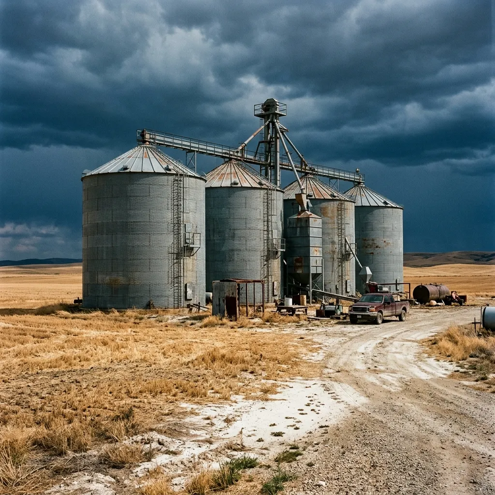
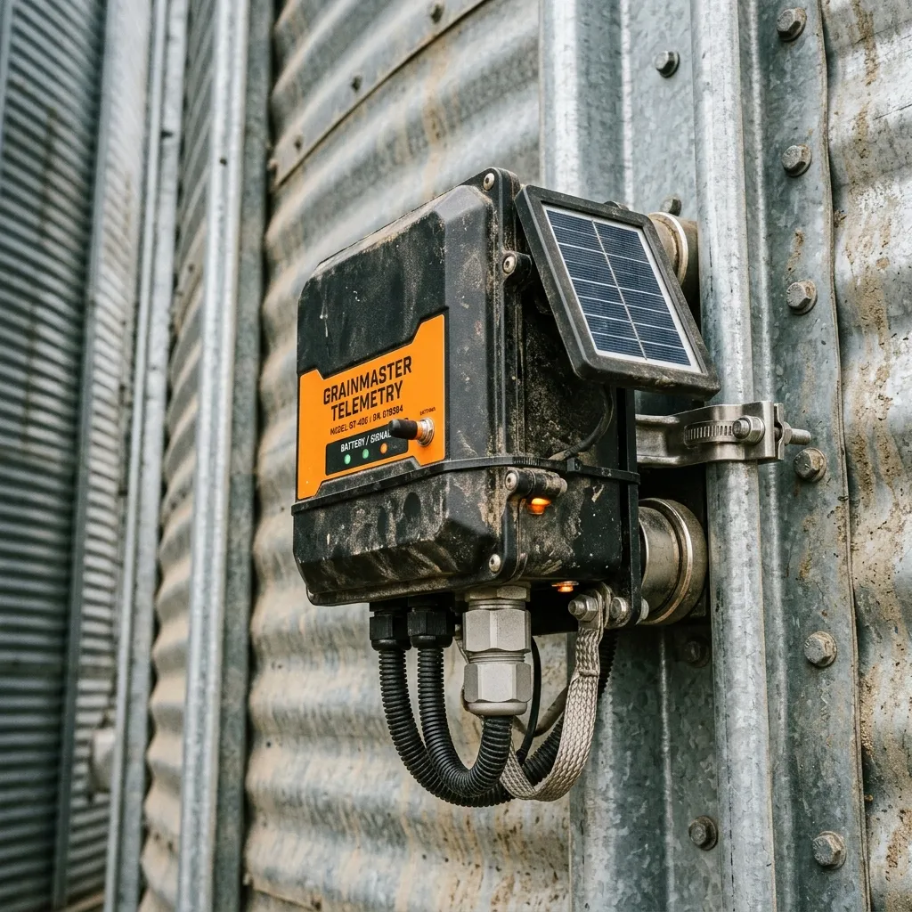

Off-Grid Silo Telemetry Built for Remote Agriculture.
Solar-powered radio networks safeguarding grain reserves in areas completely bypassed by cellular coverage.
Signal & Silo engineers rugged agricultural telemetry systems designed to operate where modern communication networks end. Based in the dry, sweeping plains of Malmesbury, we design and deploy low-power, solar-assisted monitoring hardware specifically for remote grain silos. Our systems bypass cellular subscriptions entirely, using long-range radio links to relay critical volume, temperature, and moisture metrics across dozens of kilometres. By keeping a continuous, physical eye on your wheat, barley, or maize reserves, we help farming cooperatives prevent catastrophic storage failure, grain rot, and spontaneous silo combustion without requiring a single byte of internet connectivity.

Independent Long-Range Radio Frameworks
Traditional monitoring systems rely on steady cellular reception or expensive satellite handshakes, which frequently collapse during regional power outages or severe winter storms. Our signature Swartland LoRaWAN Mesh bypasses external infrastructure entirely. Each node we mount to a galvanized steel silo is equipped with a low-power radio transceiver that operates on the open eighty-six-megahertz band. These nodes form an intelligent, self-repairing mesh network, bouncing data packets from silo to silo until they reach a single, mains-independent gateway station at your primary homestead or farm office. This gateway, powered by a tiny industrial-grade lithium-iron-phosphate battery and a thirty-watt solar panel, translates the radio signals into local dashboard metrics. The system maintains an operational range of up to thirty kilometres, meaning that even your most isolated grain bunkers can report their physical conditions every fifteen minutes. It is a completely self-sustaining communication loop designed to remain fully functional when the grid goes dark.

Non-Invasive Acoustic & Thermal Telemetry
Drilling holes into a pressurized, sealed steel silo invites moisture, structural compromise, and insect infestation. To prevent this, the SiloWatch-Pro monitoring node utilizes a completely non-invasive, bolt-on design. The unit clamps directly onto the external structural ribbing of galvanized silos using high-tensile magnetic brackets. Once positioned, the node employs dual telemetry mechanisms: high-frequency acoustic pulse-echo sensors and passive infrared thermal arrays. The acoustic arrays project micro-vibrations through the steel silo walls, measuring the acoustic dampening effect of the internal grain mass to calculate total volume within a two percent margin of error. Concurrently, the external thermal sensors trace the heat distribution across the metallic skin, mapping temperature variations within the grain column. Protected by a rugged, powder-coated aluminium enclosure rated to IPsixty-seven, the entire unit runs on three internal lithium thionyl chloride cells, guaranteeing uninterrupted performance for seven years without a single battery swap.
Stopping Grain Spoilage Before Combustion Begins
Damp grain is a biological hazard. When moisture levels exceed fourteen percent, native mould spores and yeasts rapidly multiply, consuming the grain starches and generating localized pockets of metabolic heat. In massive, packed steel structures, this biological activity can raise temperatures past eighty degrees Celsius, causing spontaneous grain combustion or total crop ruin. Our automated fermentation risk algorithm processes the raw daily thermal data collected by our SiloWatch-Pro nodes, scanning for rapid localized shifts rather than broad atmospheric heating. By comparing internal core trends against ambient regional weather, the software flags anomalous heat spikes deep within the stack. If a specific node detects a rise of more than two degrees Celsius over twenty-four hours, the local gateway sounds an early warning alarm, allowing farm managers to run fans, aerate the column, or turn the grain before the spoilage becomes irreversible or highly dangerous.
About Our Mission
Signal & Silo was born out of absolute necessity in the heart of the Swartland wheat belt, an uncompromising environment where agricultural operations cannot afford technical fragility. When you are managing thousands of tonnes of critical grain reserves atop an eighty-foot steel structure, generic commercial sensors fail quickly. We spent years navigating the harsh, dust-choked reality of remote silo yards, battling constant regional blackouts—commonly known as load shedding—that crippled standard cellular infrastructure and left vast stores of valuable grain entirely unmonitored for days at a time.
This dangerous vulnerability drove us to engineer a completely wireless, local-loop radio system. By severing our reliance on commercial network towers and grid power, we built a telemetry framework defined by raw mechanical grit and structural resilience. Our hardware is forged from local resourcefulness, specifically calibrated to survive brutal weather conditions, corrosive agricultural dust, and the severe isolation of deep rural farming operations. We don't just build electronics; we build industrial safeguards that function relentlessly, no matter how remote the silo or how dark the regional grid becomes.
Discover Our Heritage
Rotational Deployment Steps
Our deployment sequence is highly methodical, ensuring a professional and completely hands-off integration for your farming cooperative. We handle the entire process from the ground up, guaranteeing precision without interrupting your daily agricultural operations.
The Signal Survey
Before any hardware is unboxed, our field technicians conduct a comprehensive topographical analysis of your local valley. We map the terrain to establish optimal line-of-sight corridors and determine the strategic placement of your primary gateway station to maximize the LoRaWAN signal range across the property.
The External Clamping
Once the network architecture is verified, we move to the physical installation. Our team secures the SiloWatch-Pro nodes to the external structural ribbing of your galvanized silos using high-tensile magnetic brackets. This phase is entirely non-invasive—no drilling, no structural weakening, and zero risk of exposing your stored grain to external moisture or pests.
The Local Calibration
Finally, we initiate the software integration. We run a series of first-use high-frequency acoustic pulses to define the specific empty-silo baselines for each structure. This calibrates the volumetric algorithms to account for the unique dimensions of your silos, ensuring the telemetry dashboard delivers pinpoint accuracy from day one.
Frequently Answered Questions
Steel grain silos are natural lightning rods in the open Swartland landscape. Our SiloWatch-Pro nodes are built with extensive galvanic isolation and advanced transient voltage suppression circuits. Because the nodes attach externally via magnetic brackets and do not penetrate the silo's metallic skin, they remain entirely insulated from direct electrical surges travelling through the main structure.
The Swartland LoRaWAN Mesh operates on a low-frequency, eighty-six-megahertz sub-gigahertz band. Unlike high-frequency Wi-Fi or cellular bands, these long radio waves effortlessly penetrate dense mountain fog, heavy precipitation, and atmospheric particulate matter. We guarantee consistent data transmission over a thirty-kilometre radius, regardless of severe winter weather patterns.
Our volumetric algorithms do not rely on static density values. During the initial setup, you define the primary crop type for each silo in the dashboard. The software dynamically adjusts the acoustic dampening coefficient based on the specific granular profile—whether it is the heavy, dense packing of Swartland wheat or the lighter, finer composition of canola.
Absolutely not. The primary gateway station processes all thermal algorithms locally. If a fermentation risk is detected, the gateway can trigger physical hardwired alarms, activate onsite warning sirens, or send automated SMS messages via a localized GSM failover module—operating entirely without a broadband internet connection.
The integrated thirty-watt solar panels feature a hydrophobic, anti-static tempered glass coating specifically designed to repel chaff and fine agricultural dust. In standard conditions, ambient rainfall provides sufficient cleaning. Even with a sixty percent dust occlusion, the panels capture enough ambient light to keep the industrial lithium-iron-phosphate battery fully charged.
Download Technical Spec Sheet
The Depot
Our engineering operations are grounded in the realities of the agricultural sector. The Signal & Silo physical workshop and assembly yard are located on the dusty outskirts of Malmesbury, right in the operational heart of the Swartland wheat belt. We do not operate out of a slick corporate office; we build, test, and calibrate our telemetry hardware in the same harsh environment where it will eventually be deployed.
If your cooperative is ready to eliminate the blind spots in your grain storage network, we need specific structural parameters to begin engineering your custom mesh layout. Please submit your technical requirements below. Our field engineering team will review your specifications and contact you directly to schedule a preliminary valley signal mapping.